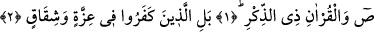
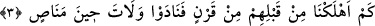
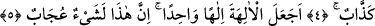
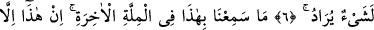
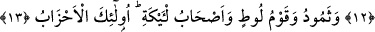
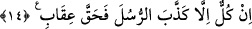

ÖĞÜT VEREN KUR’AN’A
YEMİN EDERİM Kİ
Bismillâhirrahmânirrahîm
1, 2. Sâd. Öğüt veren Kur’an’a yemin ederim ki, inkâr edenler, (iddia
ettiklerinin) aksine, bir gurur ve tefrika içindedirler.
3. Onlardan önce nice nesilleri helâk ettik. O zaman feryat ettiler. Hâlbuki artık
kurtulma zamanı değildi.
4. Aralarından kendilerine bir uyarıcının gelmesine şaştılar ve kâfirler: Bu pek
yalancı bir sihirbazdır!
5. Tanrıları, tek tanrı mı yaptı? Doğrusu bu tuhaf bir şeydir! dediler.
6. Onlardan ileri gelenler: Yürüyün, tanrılarınıza bağlılıkta direnin, sizden
istenen şüphesiz budur.
7. Son dinde de bunu işitmedik. Bu, ancak bir uydurmadır.
8. Kur’an aramızdan ona mı indirildi? diyerek kalkıp yürüdüler. Hayır! Onlar